A Gentle Introduction to `plot2()`: Enhancing Your `ggplot2` Workflow
Source:vignettes/plot2.Rmd
plot2.RmdIntroduction
If you’ve been using ggplot2 for a while, you’re likely
familiar with its strengths and versatility in creating a wide array of
visualisations. However, as powerful as ggplot2 is, it
often requires you to define every single detail yourself. Whether it’s
specifying aesthetics, selecting geoms, or adjusting scales, you’re in
control of every element. And that’s one of the reasons we love
ggplot2; it offers immense flexibility and precision.
But what if you could streamline this process for many common tasks?
Enter plot2(), a friendly companion to ggplot2
designed to reduce the repetitive aspects of plotting without
sacrificing the customizability that ggplot2 is known for.
Think of plot2() as your plotting assistant, doing a lot of
the heavy lifting automatically so you can focus on the fun parts — like
exploring your data and finding insights.
In this vignette, we’ll take a deep dive into the
plot2() function and its companion add_*()
functions. We’ll walk through everything from the basics to some of the
more advanced features, helping you unlock the full potential of this
powerful tool. Whether you’re plotting simple bar charts or complex
Sankey diagrams, plot2() has got you covered.
The Plot2 Philosophy: Less Typing, More Plotting
Before we dive into the code, let’s talk briefly about the philosophy
behind plot2(). At its core, plot2() is
designed to make plotting in R more intuitive and less cumbersome. If
you’ve ever been frustrated by having to write out ggplot()
and aes() over and over again, plot2() is the
answer.
The concept is simple, and the exact opposite of
ggplot2: give plot2() your data, and it will
figure out the rest, while enabling many popular plotting options
without ever needing to leave this single function. The goal is to get
you from data to visualisation with as little friction as possible. And
since plot2() just returns a ggplot object,
you can extend it in any way you would with the outcome of
ggplot().
This philosophy shines particularly in how plot2()
simplifies functionalities like faceting, theming, and applying inline
transformations. Rather than managing multiple functions and layers,
plot2() allows you to achieve the same results more
directly.
Getting Started with plot2()
Let’s start with the basics. The plot2() function is a
wrapper around ggplot2 that simplifies many of the tasks
you usually have to handle manually. To begin with, you don’t even need
to specify what kind of plot you want — plot2() will make
an educated guess based on your data.
Basic Usage: Let plot2() Do the Work
To get started, you can pass your data directly into
plot2() without specifying any additional arguments. For
example:
# Load the package
library(plot2)
df <- data.frame(group = c("A", "B", "C", "D"),
values = c(105, 120, 114, 136))
df |>
plot2()#> [1] "data.frame"
#> i Using y = values
#> i Using x = group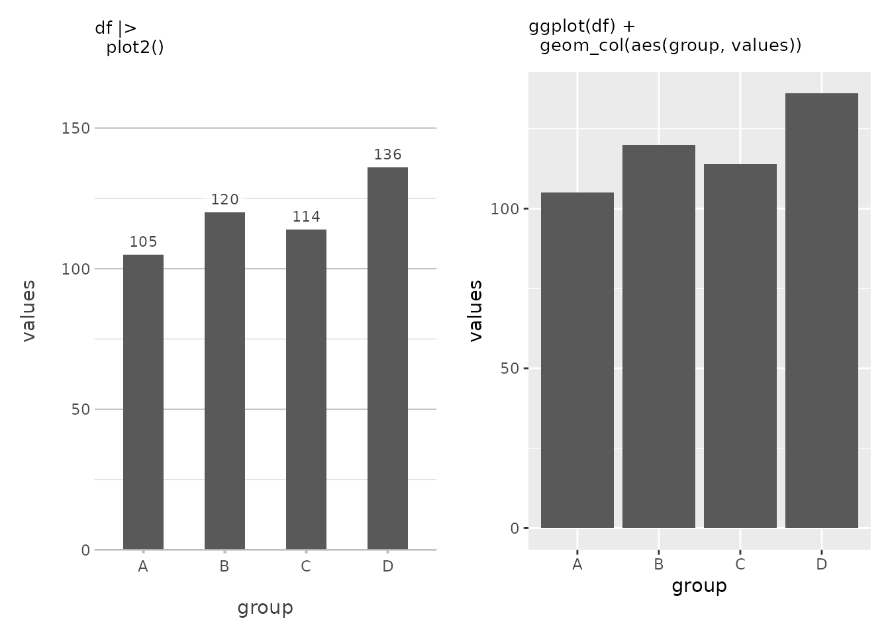
In this simple example, plot2() automatically generates
a column plot because it recognises that the x-axis is categorical and
the y-axis is numeric. It even adds data labels by default because the
x-axis is discrete. Also, at the top of the y-axis there is a bit more
space to better be able to read the plot, akin to how Microsoft Excel
plots at default. This is plot2() at its most basic — no
need to specify a plot type or worry about details like labels and
scales.
You’ll also notice the clean, uncluttered appearance of the plot,
especially when compared to a default ggplot2 plot, thanks
to theme_minimal2(), which is applied by default in
plot2(). Unlike ggplot2’s default
theme_grey() that features a grey background,
theme_minimal2() provides an even more spacious, white
background that reduces visual clutter and is optimised for printing
directly to production formats like PDFs. This makes
plot2() plots ideal for reports, publications, and
presentations where a clean, professional look is essential.
Customising the Plot Type
But what if you want something different? Maybe a scatter plot or a
line chart? No problem. You can easily specify the type
argument to get exactly what you want.
df |>
plot2(type = "l")
#> [1] "data.frame"
#> i Using y = values
#> i Using x = group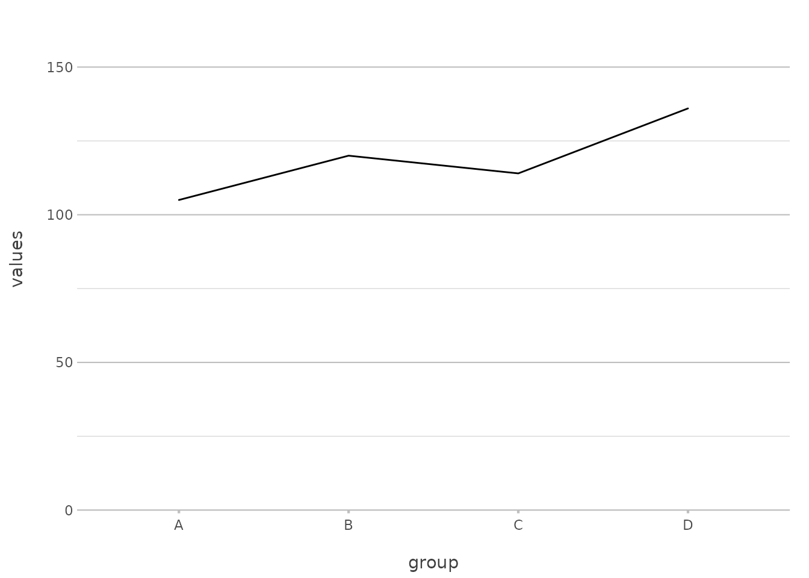
Here, we’ve explicitly set type = "l" to create a line
plot. plot2() supports a wide range of plot types, and you
can use either the full name (type = "geom_line") or an
abbreviation (type = "line", type = "l").
This flexibility can save you from remembering multiple
ggplot2 functions like geom_point(),
geom_line(), and geom_col(). With
plot2(), these are all accessible through a simple
type argument, making your workflow more intuitive.
A Closer Look at the Axes
One of the key strengths of plot2() is how it handles
axes. The x and y arguments are
straightforward, but they come with a lot of flexibility. Let’s start
with the basics and then build up to more advanced configurations.
Setting Up Basic Axes
To create a simple scatter plot, you might pass a single variable to
the x and y arguments:
mtcars |>
plot2(mpg, hp)#> [1] "data.frame"
#> i Using type = "point" since both axes are numeric
This creates a scatter plot of miles per gallon (mpg)
against horsepower (hp). This is as basic as it gets — two
variables, one for each axis. Also, plot2() always tries to
start at zero for both x and y (which can be
set with x.expand and y.expand). With
ggplot(), the default plot is ‘zoomed in’ to the data
region.
Working with Multiple Variables
Now, what if you want to compare multiple variables on the same plot?
plot2() makes this easy by allowing you to pass a vector of
variables:
mtcars |>
plot2(x = mpg, y = c(hp, disp))
#> [1] "data.frame"
#> i Using type = "point" since both axes are numeric
In this example, plot2() plots both hp and
disp against mpg on the same graph, using
different colours or other visual distinctions to separate them. This
functionality replaces the need for pre-processing steps such as
tidyr::pivot_longer() for the selected variables,
simplifying the code significantly.
Delving into Categories
Categories in plot2() replace the colour
and fill aesthetics from ggplot2. The
category argument is where you define how your data should
be grouped. Let’s start with a simple example and then explore how to
take it further.
Basic Grouping
A basic use of the category argument might look
something like this:
mtcars |>
plot2(mpg, hp, category = cyl)
#> [1] "data.frame"
#> i Using type = "point" since both axes are numeric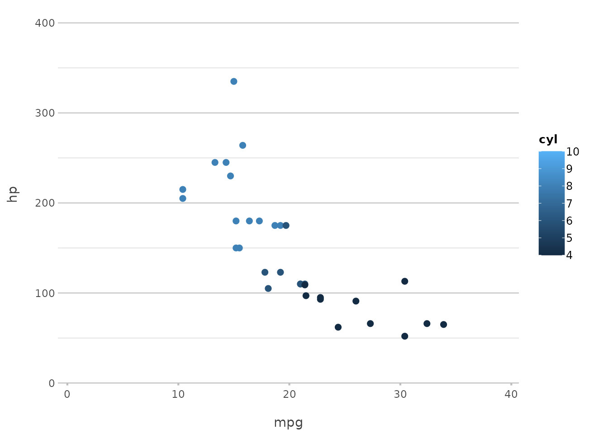
Here, the cyl variable is used to group the data by the
number of cylinders, and plot2() automatically assigns
different colours to each group. This is particularly useful for
comparing subsets of your data within the same plot.
In ggplot2, this would typically involve specifying
aes(colour = ...) or aes(fill = ...) within a
geom function. plot2() simplifies this by
handling it directly through the category argument,
reducing the need for manually setting aesthetics.
Customising Categories
But plot2() doesn’t stop there. You can fully customise
how categories are displayed. For instance, you might want to control
the colours used for each category:
mtcars |>
plot2(mpg, hp, category = cyl,
colour = c("4" = "red", "6" = "blue", "8" = "green"))
#> [1] "data.frame"
#> i Using type = "point" since both axes are numeric
#> i Using category.midpoint = 7 (the current category scale centre)
Here, we’ve specified the exact colours to use for each category, giving you full control over the appearance of your plot.
This approach mirrors what you would do with
scale_colour_manual() or scale_fill_manual()
in ggplot2, but in a more streamlined and integrated
manner.
Exploring Facets
Faceting in plot2() allows you to split your plot into
multiple panels, one for each level of a categorical variable. It’s an
excellent way to compare data across different groups.
Basic Faceting
A simple example of faceting might look like this:
mtcars |>
plot2(mpg, hp, facet = gear)
#> [1] "data.frame"
#> i Using type = "point" since both axes are numeric
#> i Assuming facet.fixed_x = TRUE since the three x scales differ by less than 25%
This command splits the plot by the number of gears, giving you a separate panel for each group. This is a quick way to see how relationships vary across different subsets of your data.
In ggplot2, achieving this would typically require
facet_wrap(~ gear) or facet_grid(gear ~ .).
With plot2(), you achieve the same effect with a simple
facet argument, making it more intuitive and easier to
remember.
Advanced Faceting Options
plot2() offers additional control over how facets are
displayed. You can specify the number of rows in the facet grid, control
whether scales are fixed or free, and more.
mtcars |>
plot2(mpg, hp, facet = starts_with("g"), facet.nrow = 2, facet.fixed_y = TRUE)
#> [1] "data.frame"
#> i Using type = "point" since both axes are numeric
#> i Assuming facet.fixed_x = TRUE since the three x scales differ by less than 25%
#> i Assuming facet.repeat_lbls_y = FALSE since y has fixed scalesIn this example, we limit the facet grid to two rows and ensure that
all y-axes have the same scale. This simplifies ggplot2’s
more complex facet_wrap() options like
scales = "free_y" and nrow, which often
require additional parameters.
Leveraging Inline Transformations with plot2()
One of the standout features of plot2() is its ability
to perform transformations directly within the function call. This
capability can dramatically reduce the need for additional data
manipulation steps, allowing you to focus on the visualisation itself.
Whether you’re calculating aggregates, formatting labels, or even
applying mathematical transformations, plot2() lets you do
it all on the fly.
Aggregations Made Easy
Suppose you want to count the number of patients admitted to each
hospital. With plot2(), there’s no need to pre-calculate
these counts; you can simply use n_distinct() to get the
unique numbers of patients directly within the function:
admitted_patients |>
plot2(x = hospital,
y = n_distinct(patient_id))
#> [1] "tbl_df" "tbl" "data.frame"
This will produce a column plot showing the number of admissions per
hospital, calculated directly within plot2().
Combining Data with Inline Transformations
The real power of plot2() comes when you start combining
these inline transformations. Want to add another dimension, like the
number of unique age groups within each hospital? You can do that just
as easily:
admitted_patients |>
plot2(x = hospital,
y = n_distinct(patient_id),
category = ifelse(date < "2010-01-01", "Prior to 2010", "Since 2010"),
facet = ward,
title = paste("Total of", n(), "patients"))
#> [1] "tbl_df" "tbl" "data.frame"
#> i To compare single values in two categories (ifelse(date < "2010-01-01", "Prior to 2010", "Since 2010")), a dumbbell plot can be used (type = "dumbbell" or type = "d")
#> i Assuming facet.fixed_y = TRUE since the two y scales differ by less than 25%
#> i Assuming facet.repeat_lbls_y = FALSE since y has fixed scales
Here, the ifelse() in category adds the grouping on
date, counting the number of unique patients per ward per hospital,
again with no need for additional code outside of
plot2().
You didn’t need to group_by() or
summarise() your data beforehand — plot2()
takes care of it all, embedding the transformation directly into the
plot creation process.
In plot2(), these tidyverse functions are available
without loading other packages: %>%(),
all_of(), any_of(), ends_with(),
everything(), first(), last(),
matches(), n(), n_distinct(),
starts_with(), where().
admitted_patients |>
plot2(x = hospital, y = median(age), category = gender)
#> [1] "tbl_df" "tbl" "data.frame"
#> i To compare single values in two categories (gender), a dumbbell plot can be used (type = "dumbbell" or type = "d")
Inline Math Transformations
You can also apply mathematical transformations directly within
plot2(), making it easy to explore relationships in your
data. For example, to plot the logarithm of patient ages across
different wards, you can do this:
admitted_patients |>
plot2(x = log(age), y = n(), y.transform = "log2", category = ward)
#> [1] "tbl_df" "tbl" "data.frame"
#> i Using type = "point" since both axes are numeric
In a traditional ggplot2 approach, you might have to
create a new variable in your data for the logarithmic transformation
(mutate(log_age = log(age))) before plotting, and a
scale_y_continuous(transform = "log2") for the y axis.
plot2() handles this seamlessly within the plotting
function itself.
Advanced Formatting on the Fly
In addition to aggregations, plot2() makes it easy to
apply text transformations directly within the plotting function. For
instance, you might want to format the date or combine different
variables for the labels:
admitted_patients |>
plot2(x = paste("Hospital", hospital),
y = n(),
category = format(date, "%Y"))
#> [1] "tbl_df" "tbl" "data.frame"
#> ! Colour palette expanded using grDevices::colorRampPalette()
#> ! Colour palette expanded using grDevices::colorRampPalette()
#> ! Omitting printing of 60 datalabels - use datalabels = TRUE to force printing
This example creates a plot where the x-axis labels combine the text
“Hospital” with the hospital name, and the categories are based on the
year extracted from the date variable. This level of
flexibility allows for highly customised plots without the need for
extra preprocessing steps.
Combining Everything Together
Let’s put it all together in a more complex example. Suppose you want to examine the distribution of patient ages across hospitals, with each bar split by gender, and you want the x-axis to reflect the hospital name and use facets for the year of admission:
admitted_patients |>
plot2(x = ifelse(gender == "F", "Females", "Males"),
y = median(age),
category = format(date, "%Y"),
facet = paste("Hospital", hospital),
x.title = "",
y.title = "Median Patient Age",
y.labels = function(x) paste(x, "yrs"),
category.title = "Year")
#> [1] "tbl_df" "tbl" "data.frame"
#> ! Colour palette expanded using grDevices::colorRampPalette()
#> ! Colour palette expanded using grDevices::colorRampPalette()
#> i Assuming facet.fixed_y = TRUE since the four y scales differ by less than 25%
#> i Assuming facet.repeat_lbls_y = FALSE since y has fixed scales
#> ! Omitting printing of 106 datalabels - use datalabels = TRUE to force printing
In this plot, we’re using multiple inline transformations, showcasing
the use of only 8 lines of code without using dplyr
transformations manually. This level of complexity, achieved with just
one plot2() call, demonstrates the power and flexibility of
inline transformations.
Sorting and Limiting Data
Sorting is a crucial part of data visualisation, as it helps bring
clarity and focus to your plots. With plot2(), you have a
variety of options to sort your data in different directions. Whether
you want to sort by frequency, alphabetically, or by a custom order,
plot2() provides flexible and powerful tools to get the job
done.
Limiting your data helps in keeping plots clean. If you only want to
display the top few items, x.max_items and
category.max_items, and facet.max_items have
got you covered.
Basic Sorting
Let’s start with a simple sort based on frequency:
mtcars |>
plot2(carb, y = n(), x.sort = "freq-desc")
#> [1] "data.frame"
#> i Using x.character = TRUE since x.sort is set
In this example, the data is sorted by the frequency of carburettor counts in descending order. This is particularly useful when you want to highlight the most common categories in your data.
This command is akin to the functionality provided by
arrange(desc(...)) combined with
geom_bar(stat = "identity"). However, plot2()
condenses this into a single, intuitive step.
Sorting Alphabetically
If you prefer to sort alphabetically, plot2() makes it
straightforward. You can use "asc" or "alpha"
to sort your data in ascending alphabetical order:
mtcars |>
plot2(carb, y = n(), x.sort = "asc")
#> [1] "data.frame"
#> i Using x.character = TRUE since x.sort is set
This command will sort the carburettor counts alphabetically, which is useful when your data naturally follows an alphabetical order.
In ggplot2, achieving this often involves using
factor() levels or reordering factors manually. With
plot2(), sorting becomes a simple matter of choosing the
appropriate argument.
Sorting with a Custom Order
Sometimes, you may want to present your data in a specific order that doesn’t follow a standard sorting method. You can define a custom order by providing a manual vector of values:
mtcars |>
plot2(carb, y = n(), x.sort = c(4, 1, 6, 8))
#> [1] "data.frame"
#> i Using x.character = TRUE since x.sort is set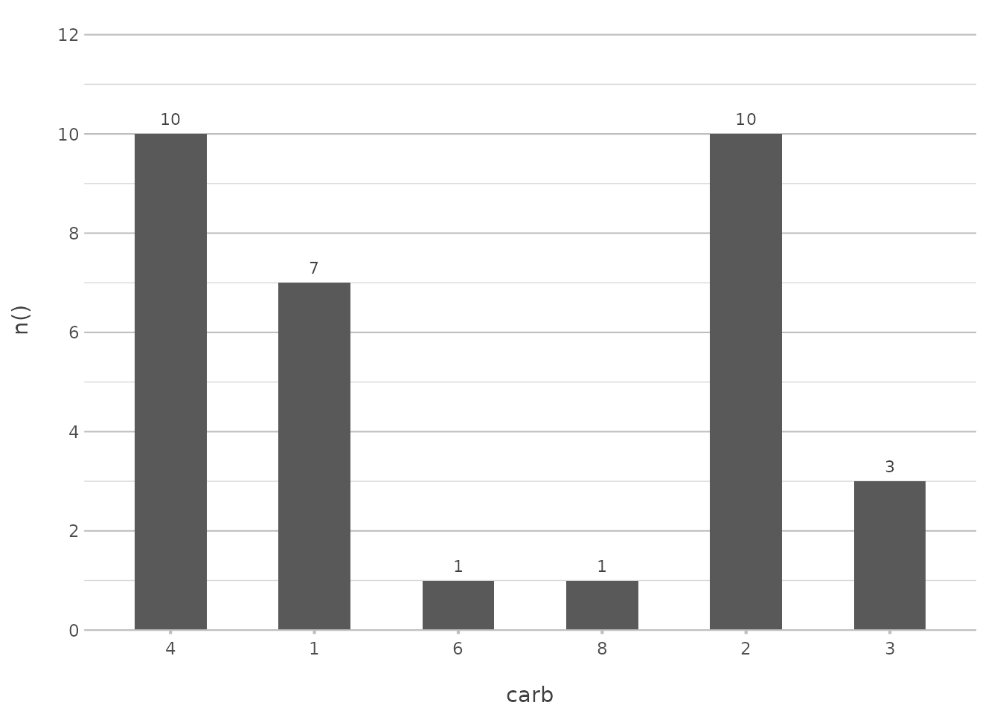
In this example, the carburettor counts will be displayed in the order of 4, 1, 6, and 8, regardless of their frequency or alphabetical order. This approach is particularly useful when you want to highlight certain categories or follow a logical sequence.
In ggplot2, this would typically involve setting
levels manually within a factor, which can be cumbersome.
plot2() streamlines this by allowing custom orders directly
within the plot2() function call.
Limiting Data
You might not always want to show every single item in your plot. For example, if you’re dealing with a lot of categories, you can limit the display to just the most frequent ones:
mtcars |>
plot2(carb, y = n(), x.max_items = 5, type = "col")
#> [1] "data.frame"
#> i Using x.character = TRUE for discrete plot type (geom_col) since carb is numeric
This limits the plot to the top 5 most frequent carburetor counts, simplifying the visualisation and making it easier to focus on the most important data.
In ggplot2, you might need to filter your data with
top_n() before plotting. plot2() handles this
within the plotting function, further reducing the need for external
data manipulation.
Combining Sorting with Limiting
Sorting can be combined with other features in plot2()
to create more sophisticated plots. For example, you might want to sort
by frequency and also limit the number of items displayed:
mtcars |>
plot2(carb, y = n(), x.sort = "freq-desc", x.max_items = 5, type = "col")
#> [1] "data.frame"
#> i Using x.character = TRUE for discrete plot type (geom_col) since carb is numeric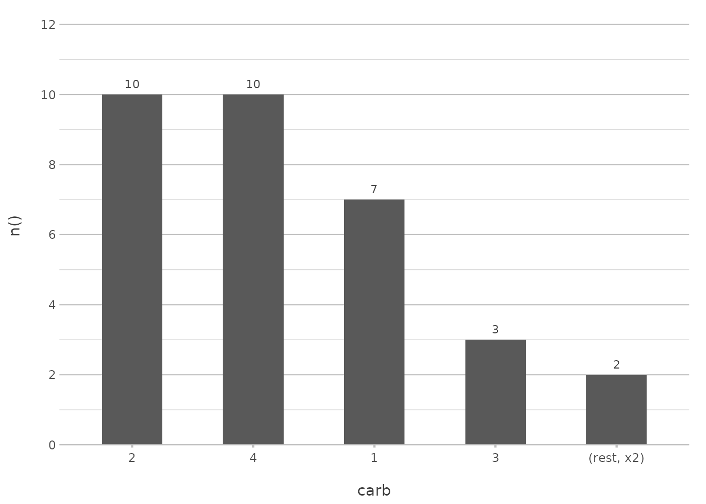
This plot will show only the top 5 most frequent carburettor counts, sorted in descending order. This combination helps to declutter your visualisation and focus on the most significant parts of your data.
In a ggplot2 approach, this might involve combining
arrange(), top_n(), and
geom_col(). plot2() consolidates these
operations into a single, coherent function call.
Visualising Sorting Options
To illustrate the impact of different sorting options, let’s create a
plot that uses a custom sort order and highlights the flexibility of
plot2():
admitted_patients |>
plot2(x = age_group, y = n(), x.sort = c("55-74", "75+", "25-54"), category = hospital, stacked = TRUE)
#> [1] "tbl_df" "tbl" "data.frame"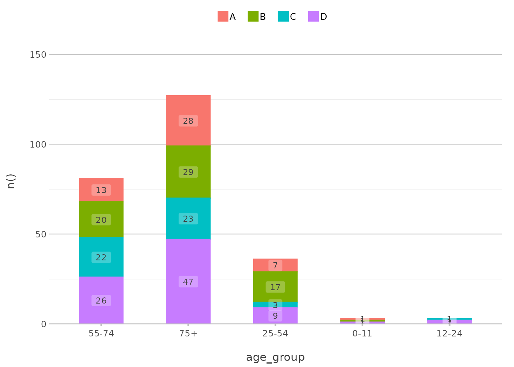
In this example, the age_group axis is sorted in a
custom order, with the “55-74” group first, followed by “75+” and then
“25-54”. The bars are stacked by hospital, providing a clear comparison
across the specified age groups.
This functionality parallels ggplot2’s ability to
reorder factors using forcats::fct_relevel() or manually
reordering levels within a factor, but with less effort and more
clarity.
Customising Colours
Customising colours in plot2() is intuitive and
flexible. You can use pre-set colour scales like viridis,
or define your own colours. The colour and
colour_fill arguments control the appearance of your
plot.
Using Pre-set Colour Scales
For a quick and visually appealing colour scheme, you might use a
viridis palette:
mtcars |>
plot2(mpg, hp, category = cyl, colour = "viridis")
#> [1] "data.frame"
#> i Using type = "point" since both axes are numeric
This applies the viridis colour scale, which is
particularly good for making sure your plot is accessible to those with
colour vision deficiencies.
This replaces the need for ggplot2’s
scale_colour_viridis_c() or
scale_fill_viridis_c(), providing a more straightforward
interface.
Defining Custom Colours
If you want more control, you can define specific colours for each category:
mtcars |>
plot2(mpg, hp, category = cyl, colour = c("4" = "red", "6" = "blue", "8" = "green"))
#> [1] "data.frame"
#> i Using type = "point" since both axes are numeric
#> i Using category.midpoint = 7 (the current category scale centre)
You can use any colour that the implemented get_colour()
function can understand, such as colour names and HTML codes:
get_colour("red")
#> [1] "#FF0000"
get_colour("#FF0000")
#> [1] "#FF0000"
get_colour("ff0000")
#> [1] "#FF0000"
get_colour("f00")
#> [1] "#FF0000" But most importantly, you can register new colours to the
plot2 package. Let’s assume these six colours are from the
style of your university/company/etc.:
register_colour(navy_blue = "#1F3A93",
burnt_orange = "#D35400",
forest_green = "#2C6F47",
goldenrod_yellow = "#DAA520",
slate_grey = "#708090",
plum_purple = "#8E4585")
#> 6 colours registered.
# Then register the whole colour list too:
register_colour(OurOrganisation = c("navy_blue", "burnt_orange",
"forest_green", "goldenrod_yellow",
"slate_grey", "plum_purple"))
#> 1 colour registered.You can now use these colours in your plots!
iris |>
plot2(x = Species, y = where(is.double), colour = "OurOrganisation")
#> [1] "data.frame"
#> i Using y = c(Petal.Length, Petal.Width, Sepal.Length, Sepal.Width)
#> i Using type = "boxplot" since all groups in Species and category contain at least three values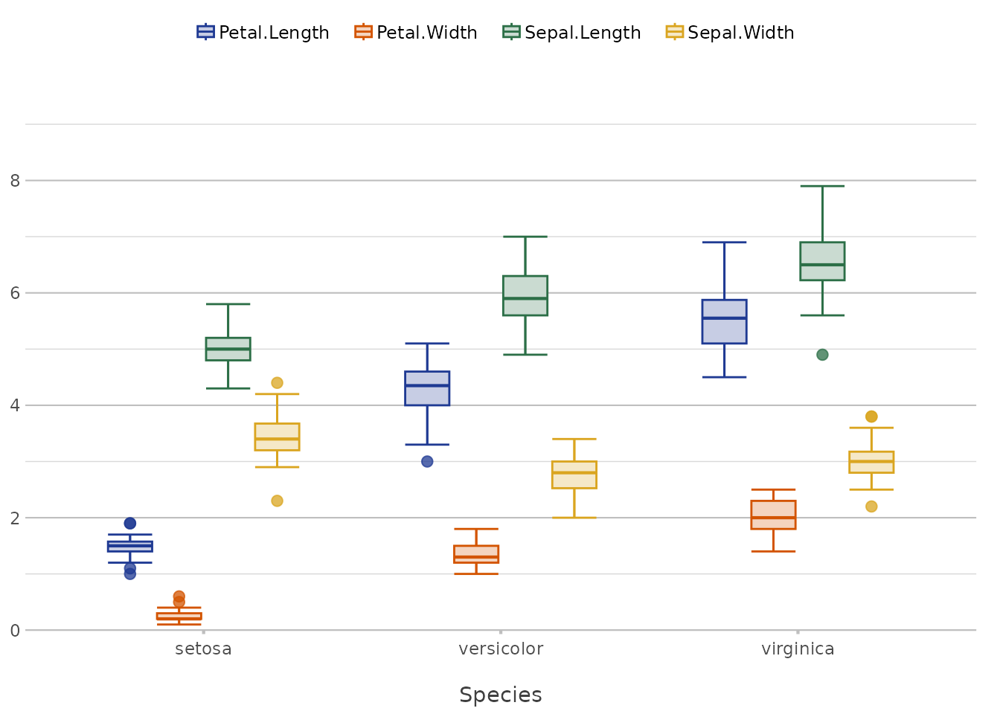
This approach mirrors ggplot2’s
scale_colour_manual() but with an added layer of
flexibility through the register_colour() function. This
makes it easier to maintain consistent branding or theme-specific
colours across multiple plots.
Default Colours
At default, plot2() sets no colours, meaning that it
uses ggplot2 colours. With some simple R options, it is very easy to
switch to another colour set.
Default:
#> [1] "data.frame"
#> [1] "tbl_df" "tbl" "data.frame"
#> [1] "tbl_df" "tbl" "data.frame"
#> [1] "tbl_df" "tbl" "data.frame"
#> [1] "tbl_df" "tbl" "data.frame"
#> [1] "sf" "data.frame"
#> [1] "tbl_df" "tbl" "data.frame"
#> [1] "tbl_df" "tbl" "data.frame"
Using any viridis colour palette:
options(plot2.colour = "viridis")#> [1] "data.frame"
#> [1] "tbl_df" "tbl" "data.frame"
#> [1] "tbl_df" "tbl" "data.frame"
#> [1] "tbl_df" "tbl" "data.frame"
#> [1] "tbl_df" "tbl" "data.frame"
#> [1] "sf" "data.frame"
#> [1] "tbl_df" "tbl" "data.frame"
#> [1] "tbl_df" "tbl" "data.frame"
options(plot2.colour = "magma")#> [1] "data.frame"
#> [1] "tbl_df" "tbl" "data.frame"
#> [1] "tbl_df" "tbl" "data.frame"
#> [1] "tbl_df" "tbl" "data.frame"
#> [1] "tbl_df" "tbl" "data.frame"
#> [1] "sf" "data.frame"
#> [1] "tbl_df" "tbl" "data.frame"
#> [1] "tbl_df" "tbl" "data.frame"
# our previously set manual colour set:
options(plot2.colour = "OurOrganisation")#> [1] "data.frame"
#> [1] "tbl_df" "tbl" "data.frame"
#> [1] "tbl_df" "tbl" "data.frame"
#> [1] "tbl_df" "tbl" "data.frame"
#> [1] "tbl_df" "tbl" "data.frame"
#> [1] "sf" "data.frame"
#> [1] "tbl_df" "tbl" "data.frame"
#> [1] "tbl_df" "tbl" "data.frame"
Advanced Plot Types: Geographies, Dumbbells and Sankey Diagrams
plot2() shines when it comes to more complex plot types.
Let’s explore three advanced options: geography plots, dumbbell plots
and Sankey diagrams.
Plotting geometries (sf objects)
Objects of class sf (simple feature) are
handled by plot2() like any other data set;
plot2() applies spatial functions such as
geom_sf() and geom_sf_text() automatically
wherever needed. The built-in theme_minimal2() theme makes
sure you get a clean map, by removing the unnecessarily verbose axes and
background colour.
The included netherlands data set is such an
sf object:
plot2(netherlands)
#> [1] "sf" "data.frame"
#> i Using category = area_km2
#> i Using datalabels = province
#> i Assuming datalabels.centroid = TRUE. Set to FALSE for a point-on-surface placing of datalabels.
ggplot2 users would typically need to specify
geom_sf() and geom_sf_label() explicitly and
might spend extra time adjusting themes to remove unnecessary axes or
background elements. plot2() simplifies this by integrating
these adjustments automatically.
Dumbbell Plots for Comparisons
Dumbbell plots are excellent for comparing two categories side by side:
admitted_patients |>
plot2(x = hospital,
y = n_distinct(patient_id),
category = gender,
type = "dumbbell")
#> [1] "tbl_df" "tbl" "data.frame"
This plot type is particularly useful for showing the difference
between two related metrics across different groups. In
ggplot2, creating a dumbbell plot often involves using
geom_segment() and geom_point() in
combination, with precise manual adjustments for aesthetics.
plot2() offers a straightforward, single-function
alternative.
Creating Sankey Diagrams
Sankey diagrams are another powerful visualisation, perfect for showing flow or movement from one state to another:
Titanic |>
plot2(x = c(Class, Age, Survived), category = Sex, type = "sankey")
#> [1] "table"
#> ! Input class 'table' was transformed using `as.data.frame()`
#> i Using y = Freq since `as.data.table()` on a `table` results in a 'Freq' column
#> i Assuming sankey.remove_axes = TRUE
Sankey plots are a great way to visualise transitions, such as the
survival rates of passengers on the Titanic across different classes and
age groups. In ggplot2, Sankey diagrams require additional
packages or custom code. plot2() makes this complex plot
type accessible directly within the function.
Adding Elements with add_*() Functions
Beyond the basics, plot2() allows you to add layers and
elements to your plots with the add_*() functions. These
are designed to integrate seamlessly with plot2() and
ggplot2.
Adding Lines, Points, and Columns
Adding a line to an existing plot is as easy as calling
add_line():
p <- mtcars |>
plot2(mpg, hp, as.character(cyl),
category.title = "Cylinders")
#> [1] "data.frame"
#> i Using type = "point" since both axes are numeric
# Notice how plot2() adds 3 lines here, since `category` is set
p |>
add_line(y = mean(hp))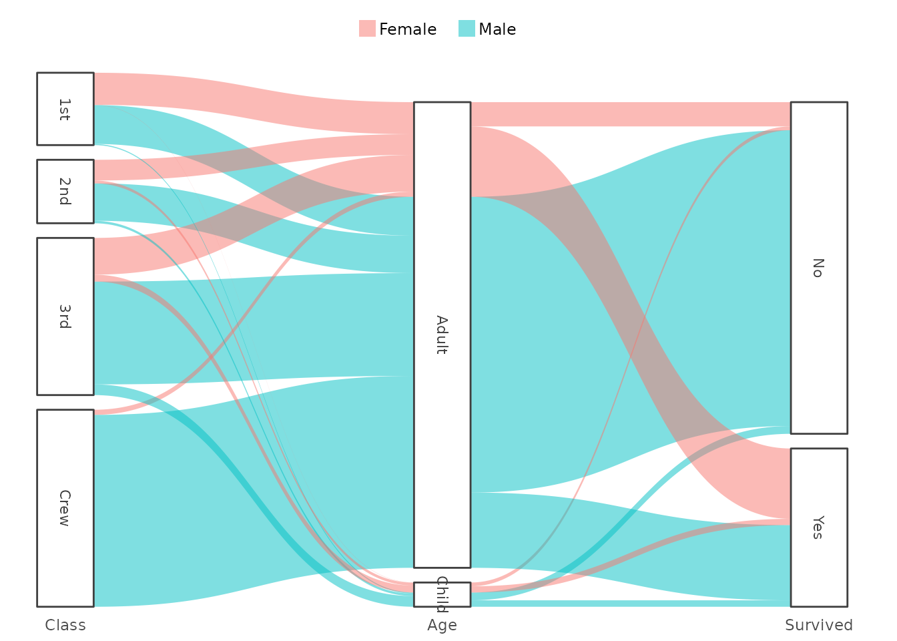
This adds a line at the mean horsepower. The add_*()
functions automatically correct for category, removing the
need for pre-processing steps to determine (in this case) the mean. A
legend item can also be added by just setting
legend.value.
In ggplot2, this would typically require adding
geom_hline() with an aesthetic mapping.
plot2() simplifies this to a single function call.
Adding Points
Points can be added to highlight specific values or observations:

In this example, we add a point at the median mpg and
hp, using a cross shape and a larger size for emphasis.
This mirrors geom_point() in ggplot2 but is
more tightly integrated with plot2()’s streamlined
interface.
Adding Columns
Adding columns is just as straightforward, and can be used to create bar charts or other similar visualisations:
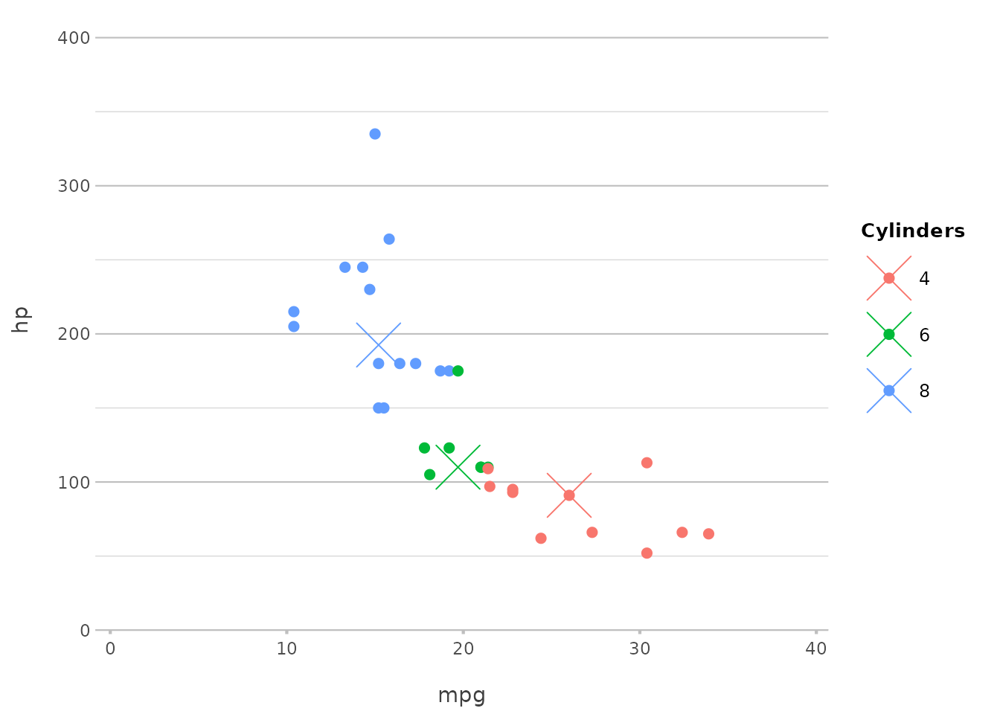
Here, we add columns based on the number of cylinders, making it easy
to compare the counts across different groups. This replaces
geom_col() or geom_bar(stat = "identity") in
ggplot2, maintaining simplicity and directness.
Plotting Error Bars
Plotting error bars is just as simple:
p |>
add_errorbar(min = hp - 10, max = hp + 10, colour = "black")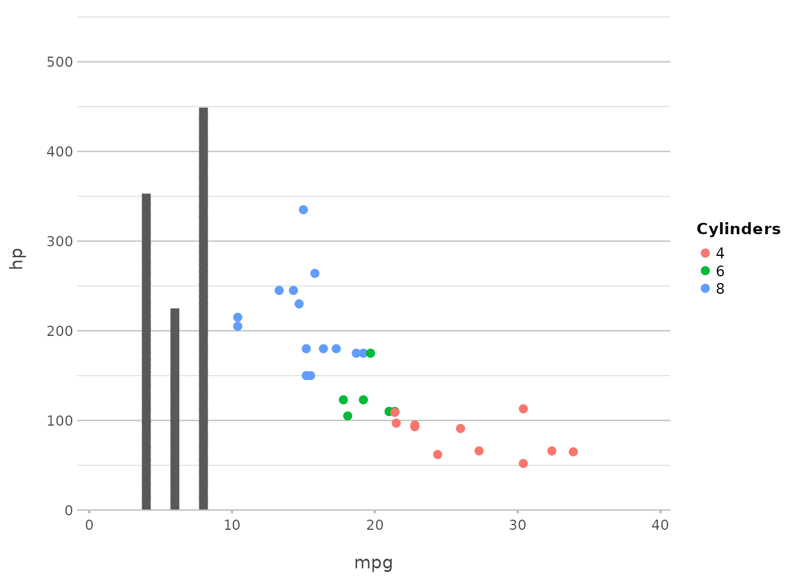
This adds error bars to the plot, showing a range of ±10 around the
hp values. plot2() abstracts away the
complexities of geom_errorbar(), offering a more intuitive
syntax.
Adding Spatial Features with add_sf()
For those working with geographic data, add_sf() makes
it easy to integrate spatial features:
plot2(netherlands) |>
add_sf(netherlands, colour_fill = NA, colour = "red", linewidth = 2)
#> [1] "sf" "data.frame"
#> i Using category = area_km2
#> i Using datalabels = province
#> i Assuming datalabels.centroid = TRUE. Set to FALSE for a point-on-surface placing of datalabels.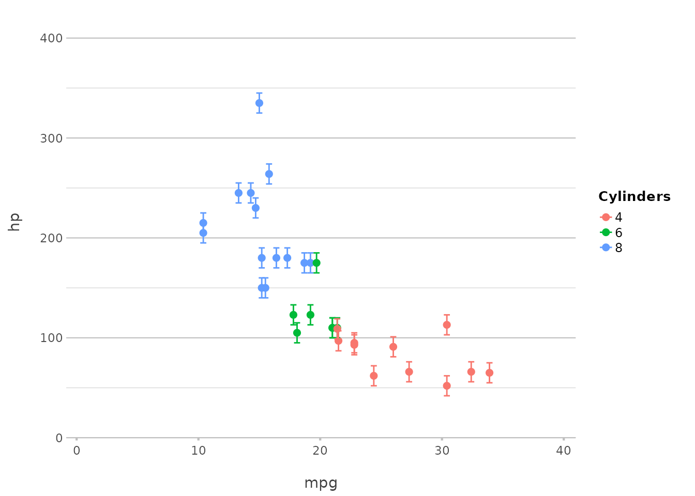
This example adds spatial features to a plot of the Netherlands, with
an extra border around the provinces. ggplot2 users would
typically use geom_sf() for this purpose, but
plot2() integrates this directly, making geographic
plotting more accessible.
Customising Fonts in plot2()
Another powerful feature of plot2() is its flexibility
with fonts. Whether you’re aiming for a professional look, something
playful, or anything in between, plot2() allows you to
easily customise fonts to suit your needs.
Using System Fonts and Google Fonts
plot2() supports all installed system fonts, as well as
over 1,400 Google Fonts, giving you an extensive range of choices for
your plots. Missing fonts will be downloaded automatically, and the
required DPI will be set for you, even in R Markdown outputs.
Here’s how you can apply a custom font from Google Fonts, which will be downloaded automatically:
mtcars |>
plot2(mpg, hp, wt * 1000,
facet = ifelse(vs == 0, "V-shaped Engine", "Straight Engine"),
font = "Rock Salt",
title = "Custom Font Example",
x.title = "Miles per US gallon",
y.title = "Gross Horsepower",
category.title = "Weight (lbs)",
facet.fixed_y = TRUE)
#> [1] "data.frame"
#> i Using type = "point" since both axes are numeric
#> i Assuming facet.fixed_x = TRUE since the two x scales differ by less than 25%
#> i Assuming facet.repeat_lbls_y = FALSE since y has fixed scales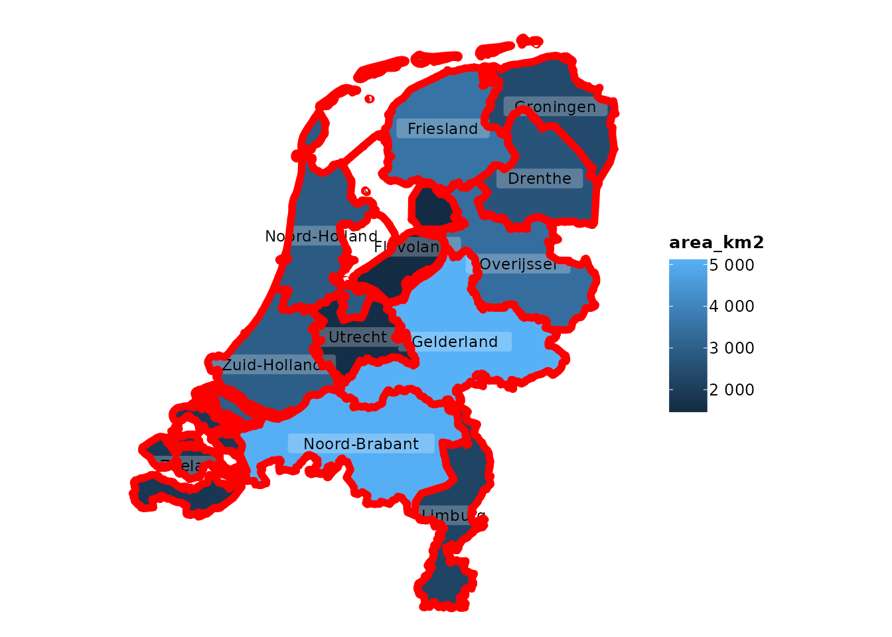
In this example, the Rock Salt font, a playful and
hand-drawn style, is applied across the plot.
In ggplot2, using custom fonts often requires extra
handling using the showtext package with manual adjustments
in theme settings. plot2() simplifies this by integrating
showtext into its core, including automatic downloading and
font scaling.
Creating Consistent Themes with Fonts
By setting font options globally through R options, you can maintain consistent styling across multiple plots. This is particularly useful when preparing a series of visualisations for a report or presentation.
options(plot2.font = "Lobster")
options(plot2.colour = "viridis")
mtcars |>
plot2(mpg, hp, title = "Consistent Font Example",
text_factor = 1.5)
#> [1] "data.frame"
#> i Using type = "point" since both axes are numeric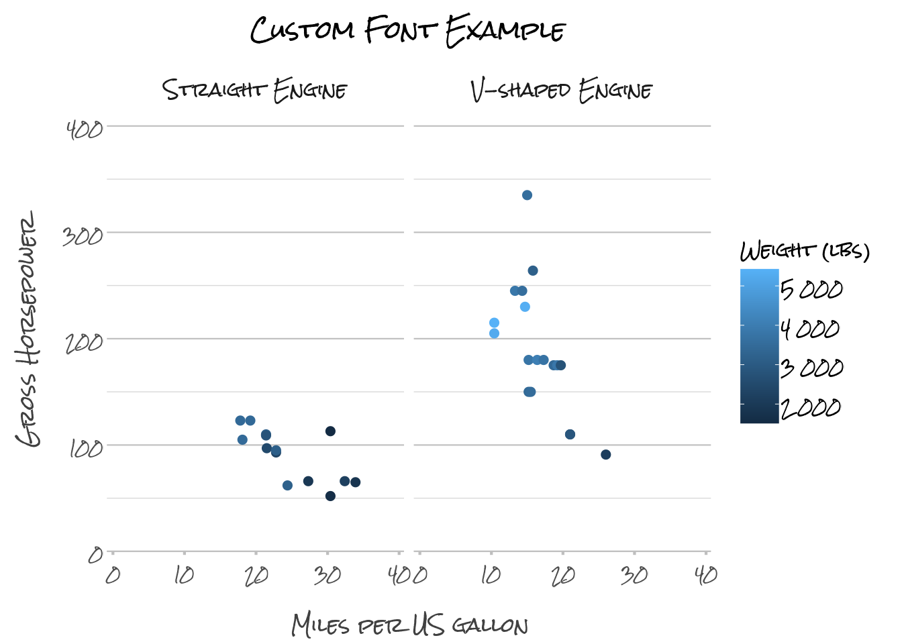
In this example, all plots will now use the Lobster
font, ensuring a consistent appearance across your visualisations. The
text_factor argument shows that it can be used to scale the
text size of all plot elements, ensuring readability and aesthetic
balance.
# reset again
options(plot2.font = NULL, plot2.colour = NULL)Customising fonts in plot2() is both flexible and
straightforward, allowing you to tailor the typography of your plots to
match your project’s style. Whether you’re using a system font or one of
the many Google Fonts, plot2() makes it easy to create
visually appealing and consistent plots with minimal effort.
Discussion
plot2() is more than just a wrapper for
ggplot2; it embodies a philosophy of simplifying and
streamlining the plotting process while building on the robust
foundation that ggplot2 provides. If you’re familiar with
ggplot2, you know that its explicit, detailed approach to
plot creation is one of its greatest strengths, allowing for
unparalleled control over every aspect of a visualisation. However, with
that power comes the need for repetitive coding and a certain level of
complexity that can be challenging, especially for beginners.
Enhancing Workflow Efficiency
The primary goal of plot2() is to make data
visualisation faster and more intuitive by automating many of the
routine tasks involved in creating plots. Whether you’re working with
simple data or complex datasets requiring advanced transformations,
plot2() helps you get to the final visualisation with fewer
lines of code and less cognitive load. This not only speeds up your
workflow but also makes your code more readable and maintainable.
For instance, the ability to perform inline transformations directly
within the plotting function eliminates the need for pre-processing
steps that would otherwise require additional code blocks using, e.g.,
dplyr or tidyr. This feature of
plot2() alone can drastically reduce the complexity of your
code, especially when working with large and multifaceted datasets.
A Natural Extension of ggplot2
ggplot2 has established itself as a cornerstone of data
visualisation in R, and for good reason. Its layer-based approach and
extensive customisation options make it incredibly powerful.
plot2() is designed to complement these strengths by
offering a more streamlined interface that automates many of the common
tasks in ggplot2. Think of plot2() as a
natural extension of ggplot2 — one that retains the
underlying power while simplifying the process, especially for users who
prefer a more direct path from data to visualisation.
The add_*() functions exemplify this philosophy by
allowing users to add layers and elements with minimal code, maintaining
the flexibility of ggplot2 while reducing the need for
repetitive boilerplate. This makes it easier to experiment with
different visualisations and iterate quickly on your designs.
Flexibility Without Complexity
One of the key advantages of plot2() is that it retains
the flexibility of ggplot2 while reducing the need for
detailed specification. The automatic handling of plot types, axis
settings, and scales means that you can create sophisticated plots with
minimal input. Yet, when you need to take control, plot2()
offers all the options you would expect, from custom sorting to precise
colour control and font selection.
This balance between flexibility and simplicity is what makes
plot2() a powerful tool for both beginners and experienced
users. Beginners can quickly produce high-quality plots without getting
bogged down in the details, while advanced users can still leverage the
full power of ggplot2 when necessary.
Philosophical Underpinnings
At the heart of plot2() is a commitment to making data
visualisation more accessible and less intimidating. The goal is to
lower the barriers to entry for creating professional-quality plots,
thereby empowering more people to engage with data in a meaningful way.
This aligns with the broader trend in the R community and the tidyverse
towards creating tools that are both powerful and easy to use.
plot2() is also designed with the understanding that not
every user needs — or wants — to be an expert in the intricacies of
ggplot2. By providing sensible defaults and automating
common tasks, plot2() allows users to focus on the most
important part of the visualisation process: interpreting and
communicating their data.
Reflecting on Usage Scenarios
The real value of plot2() becomes evident in real-world
usage scenarios. Whether you’re creating a quick exploratory plot or
preparing a polished visualisation for publication, plot2()
adapts to your needs. Its versatility makes it suitable for a wide range
of applications, from routine data analysis to sophisticated data
storytelling.
Moreover, plot2() integrates seamlessly with the broader
tidyverse ecosystem. It works effortlessly with other tidyverse
packages, allowing you to incorporate it into your existing workflows
without disruption. This ensures that you can continue to use the tools
you’re familiar with while benefiting from the efficiencies that
plot2() brings.
Looking Forward
As the R community continues to evolve, so too will the tools we use
for data visualisation. plot2() represents a step towards a
more user-friendly and efficient future, where the focus is on insights
and communication rather than technical details. It’s a tool that grows
with you — whether you’re just starting out or pushing the boundaries of
what’s possible with data visualisation.
In the end, the success of any tool is measured by how well it meets
the needs of its users. plot2() has been designed with a
deep understanding of the challenges and frustrations that come with
creating complex plots in R. By addressing these challenges head-on,
plot2() aims to make your data visualisation journey
smoother, more enjoyable, and ultimately more productive.